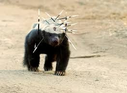

Habits
Honey badgers have a few bad habits. One of which is that they will invade other animals' homes because they don't want to make their own. Another habit is that they will pick fights with any animal including hyenas, lions, and prcupines. They are equipped with skin thick and tough enough to stop quills, machetes, and even a 9mm bullet.
